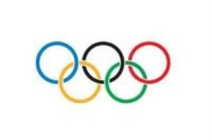

Design
Idea from Y-shaped DNA
The idea from Y-shaped DNA inspires us to design our catenane structure. In Y-shaped DNA, each two strands are held together not merely by hydrogen bonds between them but also by ‘guidance force’ given by the third strand, which is the idea of DNA assembly. This simple idea is of vital importance to our design. The key challenge in our experiment was to control the linking number (Lk) between DNA rings which is the number of crosses a single strand makes across the other., and the ideal Lk value was 1. To achieve that, we designed base pairing number with 8~10 bp between each ring which is not enough to catenate DNA rings in previous reports. Using the idea of Y-DNA, we successfully built many intriguing DNA catenane structures.
Our design
DNA Triad
To make DNA triad (shown in Figure 1), three linear ssDNA of different lengths were designed to assemble catenane rings, 52 nt for ring A, 58 nt for ring B, and 64 nt for ring C, respectively (sequence shown in Figure 3). The most important issue in DNA triad assembly was to ensure any two rings can hybridize and intertwine with each other. Hence, there should be three complementary double-stranded segments in the catenane. In the original design, base pairing number between each ring was 8bp. If the three linear ssDNA were put together, any two of the three ssDNA can complement with each other and concatenate into Y-shape. After formation of Y-DNA, ring closure was carried out by T4 DNA ligase under the assistance of three oligodeoxynucleotides (12nt) which we called connectors. In order to characterize its structure, three specific recognition sites for restriction enzymes were included in the nick part. The whole process can be shown as Figure 2.
Figure 3. Sequence of DNA Triad ABC.
Improved three-ring catenane
Figure 4. Method to fabricate DNA Triad with TT spacer.
Therefore, we revised our design, 2 thymine (TT spacer) was inserted in the matching zone of two linear DNA to weaken the spatial hindrance(shown in Figure 4). The new catenane denote for A1BC (sequence shown in Figure 5). The TT spacer could impede the tendency of formation of two-ring catenanes with two topological crosses as well. At same time, we designed a new strand A2(see Figure 5) whose pairing regions to other strand are of 10 nt-length in order to improve yield.
Figure 5. Sequence of DNA Triad A1BC and A2BC.
DNA Olympic Rings
In previous reports, few artificial catenanes were made of more than three rings, which may due to the inefficiency and complexity of fabrication of those multi-ring catenanes. After making DNA triad, we wondered if it is possible to fabricate multi-ring catenane using the same strategy of making DNA triad. Inspired by Olympic rings, we finally chose five-ring catenane as our next challenge.
Figure 6. Olympic Rings
Y shape inspires us to take advantage of DNA assembly to form complex DNA structure. Using this method we successfully fabricate Olympic-ring catenane. Enzyme digestion and AFM have proved the structure.
Sequence Design Program
 © 2014 BIOMOD-OUC-2014 designed by: 伪技术の宅
© 2014 BIOMOD-OUC-2014 designed by: 伪技术の宅